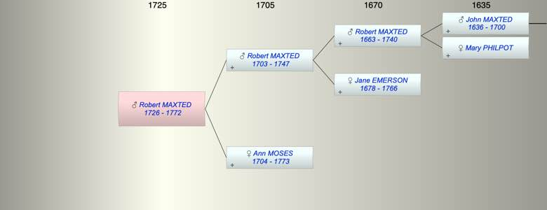

| [Index] |
| Robert MAXTED (1726 - 1772) |
|  |
| b. 1726 at St Lawrence |
| d. 1772 aged 46 |
| Parents: |
| Robert MAXTED (1703 - 1747) |
| Ann MOSES (1704 - 1773) |
| Events in Robert MAXTED (1726 - 1772)'s life | |||||
| Date | Age | Event | Place | Notes | Src |
| 1726 | Robert MAXTED was born | St Lawrence | bap 9 Feb 1726/27 ex FS | ||
| 1747 | 21 | Death of father Robert MAXTED (aged 44) | Note 1 | ||
| 1772 | 46 | Robert MAXTED died | Note 2 | ||
| Note 1: Robert, son of above Robert Maxted, died 3rd February 1747 aged 44 years |
| Note 2: Robert, son of Robert Maxted, Junior, died 4th September 1772 aged 46 years. |
| Personal Notes: |
| His will of 1772 made in Canton China is on The Genealogist mariner for East India Co, refers to his mother Ann, widow and to his brothers John George Richard and Moses and his sisters Jane and Ann |
| Created on a Mac™ using iFamily for Mac™ on 8 Oct 2023 |